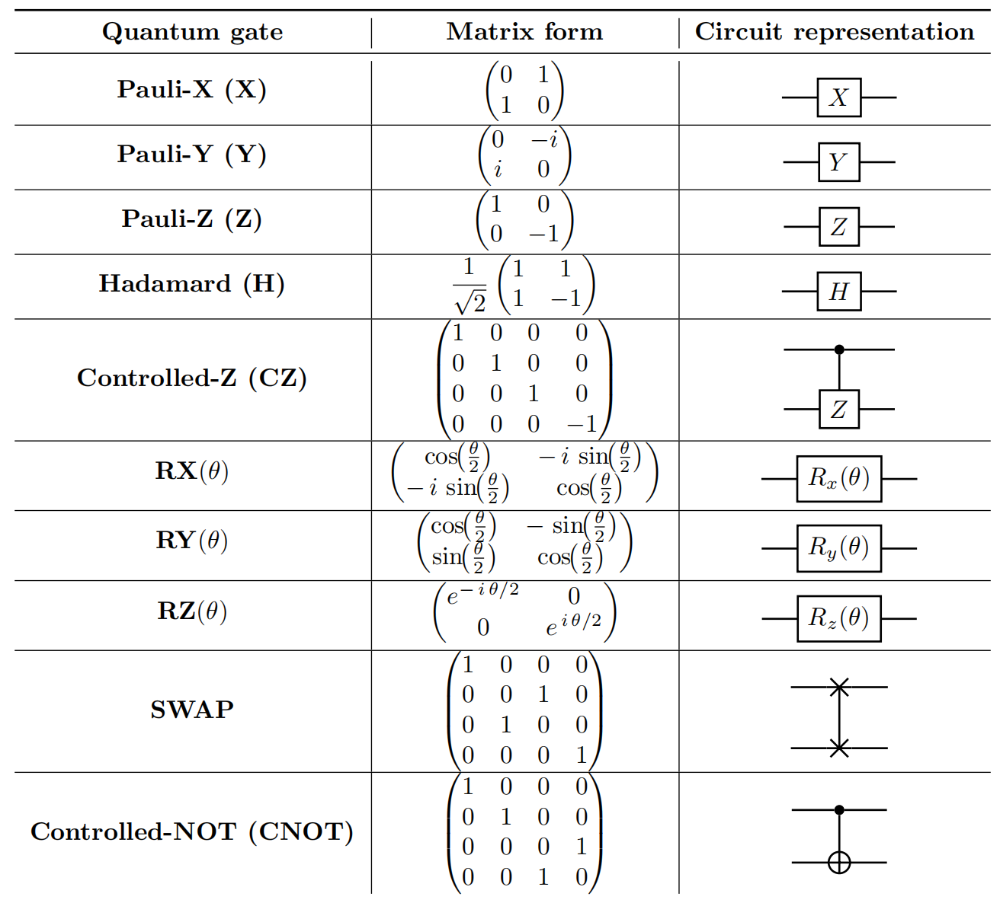
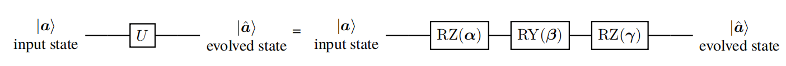

Chapter 2.2 From Digital Logical Circuit to Quantum Circuit Model
To process quantum states, we need to introduce quantum computation, a fundamental model of which is the quantum circuit model. In this section, we will begin with classical computation and transit to details about the quantum circuit model, including quantum gates, quantum channel, and quantum measurements.
Classical digital logical circuit
Digital logic circuits are the foundational building blocks of classical computing systems. They process classical bits by performing logical operations through logic gates. In this subsection, we introduce the essential components of digital logic circuits and their functionality, followed by a discussion of how these classical circuits relate to quantum circuits.
Logic gates
Logic gates are the basic components of a digital circuit. They take binary inputs, represented as $0$ or $1$, and produce a binary output based on a predefined logical operation. The most common logic gates include:
-
NOT Gate: This gate inverts the input bit, i.e., it produces $1$ if the input is $0$, and vice versa. Its truth table is shown in following table
Truth table of NOT gate
| Input (A) | Output (NOT A) |
|---|---|
| 0 | 1 |
| 1 | 0 |
-
AND Gate: Produces an output of $1$ only if both input bits are $1$; otherwise, it outputs $0$. The truth table is shown in following table
Truth table of AND gate
| Input (A) | Input (B) | Output (A AND B) |
|---|---|---|
| 0 | 0 | 0 |
| 0 | 1 | 0 |
| 1 | 0 | 0 |
| 1 | 1 | 1 |
-
OR Gate: Outputs $1$ if at least one input is $1$. The truth table is shown in following table
Truth table of OR gate
| Input (A) | Input (B) | Output (A OR B) |
|---|---|---|
| 0 | 0 | 0 |
| 0 | 1 | 1 |
| 1 | 0 | 1 |
| 1 | 1 | 1 |
-
XOR Gate: Produces an output of $1$ if the inputs are different, and $0$ otherwise. The truth table is shown in following table.
Truth table of XOR gate
| Input (A) | Input (B) | Output (A XOR B) |
|---|---|---|
| 0 | 0 | 0 |
| 0 | 1 | 1 |
| 1 | 0 | 1 |
| 1 | 1 | 0 |
These logic gates can be combined in various configurations to build more complex circuits capable of performing arbitrary arithmetic operations.
Circuit design and universality
A classical digital logic circuit is composed of interconnected gates designed to perform specific tasks, such as addition or multiplication. A key property of these circuits is universality, meaning any logical function can be implemented using a finite set of gates. For example, the NAND Gate (NOT AND) and NOR Gate (NOT OR) are universal gates. Any other logical operation can be constructed using only NAND or NOR gates.
Quantum circuit
Classical digital logical circuits provide the essential framework for understanding computation. While classical circuits operate on bits and perform deterministic operations, quantum circuits manipulate qubits and involve probabilistic behavior. The concepts of logic gates, circuit design, and universality lay the groundwork for transitioning to quantum circuits introduced in this subsection.
Quantum gate
Recall that the computational toolkit for classical computers is logic gates, e.g., NOT, AND, OR, and XOR, which are applied to the single bit or multiple bits to accomplish computation. Similarly, the computational toolkit for quantum computers (or quantum circuits) is quantum gate, which operates on qubits to complete the computation. In the following, we will introduce both single-qubit and multi-qubit gates.
Single-qubit gates. Single-qubit gates control the evolution of the single-qubit state $\ket{\bm{a}}$. Due to the law of quantum mechanics, the evolved state should satisfy the normalization constraint. The implication of this constraint is that the evolution must be a unitary operation. Concretely, denoted $U\in \mathbb{C}^{2\times 2}$ as a linear operator and the evolved state as
$$\ket{\hat{\bm{a}}}:=U\ket{\bm{a}}=\hat{\bm{a}}_1\ket{0}+\hat{\bm{a}}_2\ket{1}\in \mathbb{C}^{2}~,$$
the summation of coefficients $|\hat{\bm{a}}_1|^2+|\hat{\bm{a}}_2|^2=\braket{\hat{\bm{a}}|\hat{\bm{a}}} = \braket{ \bm{a}| U^{\dagger} U |\bm{a} }$ is equal to $1$ if and only if $U$ is unitary with $U^{\dagger} U = U U^{\dagger} = \mathbb{I}_2$. Under the density operator representation, the evolution of $\ket{\bm{a}}$ yields $$ \hat{\rho} = U\rho U^{\dagger}~,$$ where $\hat{\rho} = \ket{\hat{\bm{a}}} \bra{\hat{\bm{a}}}$ and $\rho=\ket{\bm{a}}\bra{\bm{a}}$.
Figure [1.1] illustrates several common single-qubit gates, including Pauli-X, Pauli-Y, Pauli-Z, Hadamard, and rotational single-qubit gates about the X, Y, and Z axes. According to Theorem 4.1 of Ref. [@nielsen2010quantum], any unitary operation on a single qubit can be decomposed into a sequence of rotations as: $$U = R_Z(\alpha)R_Y(\beta)R_Z(\gamma),$$ where $\alpha, \beta, \gamma \in [0, 2\pi)$, up to a global phase shift.
The evolution from $\ket{\bm{a}}$ to $\ket{\hat{\bm{a}}}$ can be visualized using a quantum circuit diagram, as illustrated in Figure [1.2]. Each wire in the circuit represents a qubit, with the initial state $\ket{\bm{a}}$ on the left and the final state $\ket{\hat{\bm{a}}}$ on the right. Gates are applied sequentially from left to right along the wire.
The circuit model serves as a foundational framework for describing quantum computation due to its intuitive and modular nature, making it accessible for researchers and practitioners transitioning from classical to quantum computing. First, the circuit model provides a standardized graphical language to represent complex quantum algorithms, enabling clear visualization of the computational flow and interactions among qubits. Second, the modularity of the circuit model allows quantum operations to be easily decomposed into a pre-defined gate set, ensuring compatibility across different quantum hardware architectures.


Multi-qubit gates. The evolution of the $N$-qubit quantum state can be effectively generalized by the single-qubit case. That is, the unitary operator $U\in \mathbb{C}^{2^N\times 2^N}$ evolves an $N$-qubit state $\ket{\psi}$ as $$ \ket{\widehat{\psi}} = U\ket{\psi}\in \mathbb{C}^{2^N} ~.$$ The evolution of $\ket{\psi}$ under the density operator representation is denoted by $\hat{\rho} = U\rho U^{\dagger}$, where $\hat{\rho} =\ket{\widehat{\psi}}\bra{\widehat{\psi}}$ and $\rho=\ket{\psi}\bra{\psi}$.
In the view of computer science, the quantum (logic) gates in Figure 1.1{reference-type=“ref” reference=“tab:Q-gates”} are well-designed matrices with the following properties. First, all quantum gates are unitary (e.g., $X X^{\dagger} = \mathbb{I}_2$). Second, $X$, $Y$, $Z$, H gates have the fixed form with size $2\times 2$; CNOT, CZ, and SWAP gates have the fixed form with size $4\times 4$. Third, $R_X(\theta)$, $R_Y(\theta)$, $R_Z(\theta)$ gates are matrices controlled by a single variable $\theta$. :::
Figure [1.1] includes two significant multi-qubit gates: the controlled-Z (CZ) gate and the controlled-NOT (CNOT) gate. For instance, the CNOT gate operates on two qubits: a control qubit (top line) and a target qubit (bottom line). If the control qubit is $0$, the target qubit remains unchanged; if the control qubit is $1$, the target qubit is flipped.
The CNOT gate plays a pivotal role in quantum computing due to its unique ability to generate entangled states, such as the Bell states and GHZ states. Besides, the CNOT gate is one of the most commonly implemented gates on quantum hardware. Its design and optimization directly impact the fidelity and scalability of quantum systems.
Universality. While many single and multi-qubit gates exist, it is sufficient to use a universal set of gates to construct any unitary operation. As proved in Chapter 4.5.2 of Ref. [@nielsen2010quantum], any unitary operator $U$ can be decomposed into the single-qubit and two-qubit gates with a certain arrangement.
Fact. Suppose we are given a fixed universal gate set $\mathcal{G}$, which generates a dense group ${\rm SU}(d)$. Then any unitary operator $U\in {\rm SU}(d)$ can be approximated to an arbitrary precision $\epsilon>0$ by a finite sequence of gates from $\mathcal{G}$. Formally, there exists a decomposition such that $$\left|U-\prod_{l=1}^{L} G_l\right|_{\text{op}} \leq \epsilon, \quad G_l \in \mathcal{G}, \quad L \in \mathbb{N},$$ where $\left|\cdot\right|$ is the operator norm, and $L$ is the required number of gates that scales as: $$L = O\left(\log^c(1/\epsilon)\right),$$ with $c \approx 4$.
A commonly used universal gate set includes single-qubit rotations $R_X(\theta)$, $R_Y(\theta)$, $R_Z(\theta)$, and two-qubit gates such as the CNOT gate. This universal gate set provides a practical and foundational toolkit for implementing quantum machine learning algorithms.
To illustrate the construction of unitary operators, we present two examples of 3-qubit unitary operators implemented using these gates.
Example of State evolved by single-qubit gates. For $\ket{\psi}=\ket{000}$ and $\ket{\widehat{\psi}}=\ket{111}$, the decomposition of the corresponding unitary $U$ is $$ U=X\otimes X \otimes X~.$$ Such a form means that the operation of quantum gates also obeys the tensor product rule among different qubits.
Example of State evolved by two-qubit gates. When $\ket{\psi}=\ket{000}$ and the unitary operation is $$ U=(\Hada \otimes \mathbb{I}_4) (\CNOT \otimes \mathbb{I}_2)( \mathbb{I}_2 \otimes \CNOT ),$$ the evolved state is the GHZ state introduced in Example. 2.2, i.e., $\ket{\widehat{\psi}}=U\ket{\psi}=\frac{1}{\sqrt{2}}(\ket{000} + \ket{111})$, which is broadly used in quantum information processing celebrated by its non-classical correlations.
Quantum channels
Analogous to the unitary operation describing the evolution of quantum states in the closed system, the quantum channel formalizes the evolution of quantum states in the open system. Refer to the textbook [@wilde2011classical] for more details.
Mathematically, every quantum channel $\mathcal{N}(\cdot)$ can be treated as a linear, completely positive, and trace-preserving map (CPTP map).
Definition. Denote $\mathcal{L}(\mathcal{H})$ as the space of square linear operators acting on the Hilbert space $\mathcal{H}$. We say $\mathcal{N}(\cdot)$ is a CPTP map if the following conditions are satisfied:
-
The ’linearity’ requires for any $X_A, Y_A \in \mathcal{L}(\mathcal{H}_A)$ and $a,b\in\mathbb{C}$, $\mathcal{N}(a X_A + b Y_A)=a\mathcal{N}(X_A) + b \mathcal{N}(Y_A)$.
-
The definition of completely positive is as follows. A linear map $\mathcal{N}:\mathcal{L}(\mathcal{H}_A)\rightarrow \mathcal{L}(\mathcal{H}_B)$ is a positive map if $\mathcal{N}(X_A)$ is positive semi-definite for all positive semi-definite operators $X_A \in \mathcal{L}(\mathcal{H}_A)$. Moreover, a linear map $\mathcal{N}:\mathcal{L}(\mathcal{H}_A)\rightarrow \mathcal{L}(\mathcal{H}_B)$ is completely positive if $\mathbb{I}_R\otimes \mathcal{N}$ is a positive map for any size of $R$.
-
The trace preservation requires $\text{Tr}(\mathcal{N}(X_A))=\text{Tr}(X_A)$ for any $X_A \in \mathcal{L}(\mathcal{H}_A)$.
A quantum channel can be represented by the Choi-Kraus decomposition [@nielsen2010quantum]. Mathematically, let $\mathcal{L}(\mathcal{H}_A, \mathcal{H}_B)$ denote the space of linear operators taking $\mathcal{H}_A$ to $\mathcal{H}_B$. For $X_A\in \mathcal{L}(\mathcal{H}_A) $, the Choi–Kraus decomposition of the quantum channel $\mathcal{N}(\cdot): \mathcal{L}(\mathcal{H}_A)\rightarrow \mathcal{L}(\mathcal{H}_B)$ is
$$\mathcal{N}(X_A)= \sum_{a=1}^d \mathbf{M}_a X_A \mathbf{M}_a^{\dagger},\mathbf{M}_a\in \mathcal{L}(\mathcal{H}_A, \mathcal{H}_B),$$
where $\sum_{a=1}^d \mathbf{M}_a^{\dagger}\mathbf{M}_a=\mathbb{I}$. Here $d\leq \text{dim}(\mathcal{H}_A)\text{dim}(\mathcal{H}_B)$ and $\text{dim}(\mathcal{H})$ refers to the dimension of the space $\mathcal{H}$.
We next introduce two common types of quantum channels, which will be broadly employed in the following context to simulate the noise of quantum devices.
The first type is the depolarizing channel, which considers the scenario such that the information of the input state can be entirely lost with some probability.
Definition. Given a quantum state $\rho\in\mathbb{C}^{D\times D}$, the depolarization channel $\mathcal{N}_p$ acts on a $D$-dimensional Hilbert space follows $$\mathcal{N}_p(\rho) = (1-p)\rho + p{\mathbb{I}_D}/{D}~,$$ where $\mathbb{I}_D/{D}$ refers to the maximally mixed state and $p$ is a scalar representin the noise strength.
Example of Single-qubit state with depolarization channel. Consider a single-qubit pure state $\rho=\ket{0}\bra{0}$ with the density matrix $$ \rho = \ket{0}\bra{0} = \begin{bmatrix} 1 & 0 \ 0 & 0 \end{bmatrix}.$$ When the depolarizing channel $\mathcal{N}_p$ acts on this state, the output is given by
$$\mathcal{N}_p(\rho) = (1-p) \begin{bmatrix} 1 & 0 \\ 0 & 0 \end{bmatrix} + \frac{p}{2} \begin{bmatrix} 1 & 0 \\ 0 & 1 \end{bmatrix} = \begin{bmatrix} 1 - \frac{p}{2} & 0 \\ 0 & \frac{p}{2} \end{bmatrix}.$$
Therefore, the purity is inferred as: $$\text{Tr}(\mathcal{N}_p(\rho)) = 1 - p + \frac{p^2}{2}.$$ When $p=0$, the state remains pure and unchanged. When $0<p\leq 1$, the state becomes a mixture of states $\ket{0}$ and $\ket{1}$ with $\text{Tr}(\mathcal{N}_p(\rho))<1$. When $p=1$, the state evolves into the maximally mixed state.
The second type is the Pauli channel, which serves as a dominant noise source in many computing architectures and as a practical model for analyzing error correction [@flammia2020efficient].
Definition. Given a quantum state $\rho\in\mathbb{C}^{2\times 2}$, the single-qubit Pauli channel $\mathcal{N}_{\vec{p}}$ acts on this state follows
$$\mathcal{N}_{\vec{p}}(\rho) = p_I \rho + p_X X \rho X + p_Y Y \rho Y + p_Z Z \rho Z ~,$$
where $\vec{p}= (p_I, p_X, p_Y, p_Z)$ and $p_I+p_X+p_Y+p_Z=1$.
Note that for a single-qubit system, the depolarization channel is a special Pauli channel with setting $p_X=p_Y=p_Z=p$.
Example of Single-qubit state with Pauli channel. Consider a single-qubit pure state $\rho=\ket{0}\bra{0}$ with the density matrix: $$\rho = \ket{0}\bra{0} = \begin{bmatrix} 1 & 0 \\ 0 & 0 \end{bmatrix}.$$
When the Pauli channel $\mathcal{N}_{\vec{p}}$ acts on this state, the output is given by
$$\mathcal{N}_{\vec{p}}(\rho) = p_I \begin{bmatrix} 1 & 0 \\ 0 & 0 \end{bmatrix} + p_X \begin{bmatrix} 0 & 0 \\ 0 & 1 \end{bmatrix} + p_Y \begin{bmatrix} 0 & 0 \\ 0 & 1 \end{bmatrix} + p_Z \begin{bmatrix} 1 & 0 \\ 0 & 0 \end{bmatrix} = \begin{bmatrix} p_I + p_Z & 0 \\ 0 & p_X + p_Y \end{bmatrix}.$$
Let us analyze three special cases for the probability vector $\vec{p} = (p_I, p_X, p_Y, p_Z)$:
-
Case 1: If $p_X = p_Y = p_Z = p$, the Pauli channel reduces to the depolarization channel and the prepared state becomes: $$\mathcal{N}_{\vec{p}}(\rho) = \begin{bmatrix} 1 - 2p & 0 \\ 0 & 2p \end{bmatrix}.$$
-
Case 2: If $p_Y = p_Z = 0$, the prepared state becomes: $$\mathcal{N}_{\vec{p}}(\rho) = \begin{bmatrix} 1 - p_X & 0 \\ 0 & p_X \end{bmatrix}.$$ In this scenario, the Pauli channel reduces to the bit-flip channel.
-
Case 3: For other values of $\vec{p}$, the effect of the Pauli channel on the pure state $\ket{0}$ can be interpreted as a combination of the depolarizing channel and the bit-flip channel.
To generalize the single-qubit Pauli channel to a multi-qubit Pauli channel, we extend the definition to account for the action of Pauli operators on multiple qubits.
Definition. Given a quantum state $\rho\in\mathbb{C}^{2^N\times 2^N}$ for an $N$-qubit system, the multi-qubit Pauli channel $\mathcal{N}_{\vec{p}}$ acts as
$$\mathcal{N}_{\vec{p}}(\rho)=$$
$$\sum_{P\in \mathcal{P}_N}p_P P\rho P^\dagger,$$
where $\mathcal{P}_N=\{I,X,Y,Z\}^{\otimes N}$ denotes the set of all tensor products of the $N$ single-qubit Pauli operators, $p_P$ is the probability of applying the Pauli operator $P$ with
$$\sum_{P\in \mathcal{P}_N}p_P=1.$$
The multi-qubit Pauli channel considers the existence of correlated Pauli noise on different qubits. If each qubit only experiences independent single-qubit Pauli noise, the multi-qubit channel can be written as the tensor product of sing-qubit Pauli channels.
Having acknowledged the motivation and definition of quantum channels, it is natural to ask what is the relation between quantum channels and quantum gates? A straightforward observation is that a quantum gate is a special case of a quantum channel. Conversely, the evolution of the quantum state can be built from the unitary operation via the isometric extension [@wilde2011classical]. The following theorem shows that any quantum channel arises from a unitary evolution on a larger Hilbert space.
According to the Choi-Kraus decomposition, the unitary operator is a special case of a quantum channel. Specifically, when $d=1$, the quantum channel reduces to: $$\mathcal{N}(X_A)= \mathbf{M}_1 X_A \mathbf{M}_1^{\dagger},$$ where $\mathbf{M}_1$ is a unitary operator satisfying $\mathbf{M}_1^{\dagger}\mathbf{M}_1=\mathbb{I}$. This highlights that all unitary operators are quantum channels, but not all quantum channels are unitary. :::
Theorem. [@wilde2011classical] Let $\mathcal{N}(\cdot):\mathcal{L}(\mathcal{H}_A)\rightarrow \mathcal{L}(\mathcal{H}_B)$ be a quantum channel. Let $\mathcal{H}_E$ be the Hilbert space of an auxiliary system. Denote the input state as $\rho$ (i.e., a density operator $\rho \in \mathbb{C}^{\text{dim}(\mathcal{H}_A)\times \text{dim}(\mathcal{H}_A)}$). Then there exists a unitary $U: \mathcal{L}(\mathcal{H}_A \otimes \mathcal{H}_E)\rightarrow \mathcal{L}(\mathcal{H}_B\otimes \mathcal{H}_E)$ and a normalized vector (i.e., a pure state) $\ket{\varphi} \in \mathbb{C}^{\text{dim}(\mathcal{H}_E)}$ such that $$ \mathcal{N}(\mathcal{\rho}) = \text{Tr}_E\left(U(\rho \otimes \ket{\varphi}\bra{\varphi} )U^\dagger \right)~,$$ where $\text{Tr}_E(\cdot)$ denotes the partial trace over the ancillary Hilbert space $\mathcal{H}_E$, and the dimension of $\mathcal{H}_E$ depends on the rank of the Kraus representation of $\mathcal{N}$.
Proof sketch of Theorem. We extend the system to include an ancillary Hilbert space $\mathcal{H}_E$, representing the environment. The combined space $\mathcal{H}_A \otimes \mathcal{H}_E$ forms a closed physical system, where the evolution of the quantum state can be described by a unitary operator $U$ acting on $\mathcal{H}_B \otimes \mathcal{H}_E$.
To find a feasible unitary $U$, we express the quantum channel $\mathcal{N}$ using its isometric extension [@wilde2011classical], i.e., $$ \mathcal{N}(\rho) = \text{Tr}_E\left(V \rho V^\dagger\right),$$ where $V: \mathcal{H}_A \to \mathcal{H}_B \otimes \mathcal{H}_E$ is an isometry operator embedding the input state into the larger Hilbert space. For simplicity, assume $\mathcal{H}_A = \mathcal{H}_B$. The isometry operator $V$ can always be embedded into a unitary operator $U$ acting on $\mathcal{H}_B \otimes \mathcal{H}_E$, ensuring that $U$ captures the reversible evolution of the extended system.
Next, we augment the input state $\rho$ by introducing an ancillary state $\ket{\varphi} \in \mathcal{H}_E$, yielding the combined state $\rho \otimes \ket{\varphi}\bra{\varphi}$. Substituting this augmented state and the unitary operator $U$ into the isometric extensio gives the target equation. The Theorem is thereby proven.
Quantum measurements
In addition to quantum gates and quantum channels that manipulate quantum states, another special operation in quantum circuits is measurement. The aim of quantum measurements is to extract quantum information of the evolved state into the classical form. The quantum circuit diagram, which describes applying a unitary $U$ followed by the quantum measurement to a single-qubit state $\ket{\bm{a}}$, is shown in Figure [1.5]. In particular, both types of measurements are depicted by the meter symbol.
The quantum measurements can be categorized into two types, i.e., projective measurements and positive operator-valued measures [@preskill1999lecture; @nielsen2010quantum].
The projective measurement, which is also called the von Neumann measurement, is formally described by the Hermitian operator $A=\sum_i\lambda_i \ket{v_i}\bra{v_i}$, where ${\lambda_i}$ and ${\ket{v_i}}$ refer to the eigenvalues and eigenvectors of $A$, respectively. Supported by the Born rule [@nielsen2010quantum], when the measurement operator $A\in\mathbb{C}^{2^N\times 2^N}$ is applied to an $N$-qubit state $\ket{\Phi}\in \mathbb{C}^{2^N}$, the probability of measuring any one of the eigenvalues in ${\lambda_i}$ is $$\Pr(\lambda_i)= |\braket{v_i| \Phi}|^2~.$$ In the density operator representation, suppose that the state to be measured is $\rho\in\mathbb{C}^{2^N\times 2^N}$, the probability of measuring any one of the eigenvalues in ${\lambda_i}$ is $$\Pr(\lambda_i)= \text{Tr}(\rho \ket{v_i}\bra{v_i}).$$ Define $\Pi_i=\ket{v_i}\bra{v_i}$ as the $i$-th projective operator. The complete set of projective operators ${\Pi_i}$ has the following properties
$$\text{1)} \Pi_i\Pi_j=\delta_{ij};$$
$$\text{2)} \Pi^{\dagger}_i=\Pi;$$
$$\text{3)} \Pi^2_i=\Pi;$$
$$\text{4)} \sum_i \Pi_i = \mathbb{I}_{2^N}.$$
A special set of projectors is defined as $\Pi_i=\ket{i}\bra{i}$ for $\forall i\in [2^N]$, which measures the probability corresponding to the basis state $\ket{i}$. For example, given the single-qubit state $\ket{\bm{\alpha}}$, the probability to measure the computational basis state $\ket{i}$ is $$ \Pr(i) = |\braket{v_i|\bm{\alpha}}|^2=|\alpha_i|^2~.$$
The second type of quantum measurement is the positive operator-valued measures (POVM). A POVM is described by a collection of positive operators $0\preceq E_i$ satisfying $\sum_i E_i=\mathbb{I}$. Each positive operator $E_i$ is associated with an outcome of measurement. Specifically, applying the measurement ${E_m}$ to the state $\ket{\Phi}$, the probability of outcome $i$ is given by $$\Pr(i) = |\braket{\Phi|E_i|\Phi}|^2.$$ In the density operator representation, suppose that the state to be measured is $\rho\in\mathbb{C}^{2^N\times 2^N}$, the probability of outcome $i$ is given by $$\Pr(\lambda_i)= \text{Tr}(\rho E_i).$$ We remark that the main difference between projective measurements and POVM elements is that the POVM elements do not have to be orthogonal. Due to this reason, the projective measurement is a special case of the generalized measurement (i.e., with setting $E_i=\Pi_i^{\dagger}\Pi_i$).